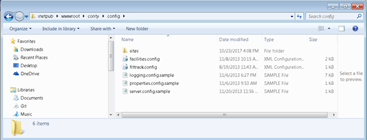
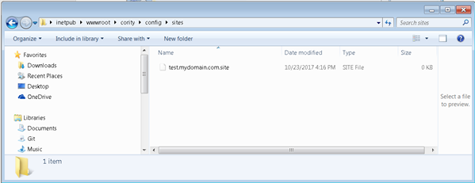

A single instance of the Cority application can serve multiple sites. With this, you can have your production and development sites as a single application but using different databases. This helps eliminate the overhead of having multiple Cority instances running on the webserver.
To enable this, create a “sites” folder in c:\inetpub\wwwroot\cority\config”.

The configuration for each site is in a site configuration file like so:

The filename should match the domain name that you wish to use for the site. In this example the domain name for the site would be “test.mydomain.com”. All site configuration files start with the domain name and end in “.site”. These files can be configured while the Cority instance is running and changes will take effect immediately.
A site file contains the following:
<site>
<connection.connection_string>Server=mywebserver;initial catalog=mydatabase;user id=myusername;password=mypassword</connection.connection_string>
<default_schema>mydefaultschema.dbo</default_schema>
<olapdatasource>http://olapserver/olap009/msmdpump.dll</olapdatasource>
<olapdatabase>myolapdatabase</olapdatabase>
</site>
It is a standard text file with three sections that need to be configured.
| Property | Description |
| <connectionl.connection_string> | The connection string for the database that corresponds to this site. |
| <default_schema> | The default database. |
| <olapdatasource> | The datasource for OLAP. |
| <olapdatabase> | The OLAP database. |